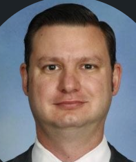

James Anderson

Summary
I am a naturally empathetic and creative person with a love of learning. I build relationships and work with people to develop solutions to difficult problems.
Education
- Graduate Diploma International Community Development
Victoria University
Completed 2021
- Entry Certificate in Business Analysis
iRM Training
2019
- Agile Project Management
PRINCE2 training
2018
- Bachelor of Science
University of New South Wales
Completed 2004
Work experience
Customer Service Consultant
AIA Health
August 2022 – November 2022
AIA Health is a health insurance provider. My role was to respond to phone calls from existing members regarding their polices and accessing benefits.
Key responsiblities
- Advised members how to make the most out of their health insurance
- Data entry and recoding conversations in CRM
- Problem solving with members as to what level of cover was best for them and provided advice as to considerations and consequences for changes.
Project Officer
Department of Health (VIC)
November 2021 – May 2022
My role was in the Program Management Office (PMO) in the mental health division responsible for implementing the 65 recommendations of the Royal Commission into Mental Health in Victoria. I was responsible for onboarding initiatives into the Adaptive Program Management (APM) methodology and managing the database ‘KEY’ which was used to monitor and report on mental health initiatives.
Key responsiblities
- Assisted with the onboarding of the new database ‘KEY’ into the PMO
- Conducted drafting sessions with initiative owners to onboard their initiatives into the APM methodology
- Conducted quality assurance reviews of roadmaps to be onboarded into the APM methodology
- Conducted training for initiative owners on how to use the database ‘KEY’ to update their roadmaps for reporting and monitoring
- Generating reports and graphs for senior management to have oversight of reform program
Achievements
- The division required a database to monitor and report on the status of initiatives which made up the recommendations of the Royal Commission into Mental Health in Victoria. The database KEY had been selected. I was responsible for liaising with the provider to customise our instance of KEY, onboarding roadmaps into the new system and creating dashboards and reports in the system that enabled the right people to get the right information at the right time.
Member and Partner Engagement Officer
Institute of Public Administration Australia (Victoria)
2017 – 2021
IPAA Victoria is a civil society organisation supporting staff and organisations in the public sector. My responsibilities include acquiring new members and partners/sponsors, managing relationships, working with stakeholders to create new events and activities, managing communities of practice, and developing business processes and managing projects related to the database and other IT systems.
Key responsibilities
- Managed projects across the membership and partnership areas, and ICT projects.
- Working with stakeholders/members to encourage participation, uptake of benefits and contribution to the organisation’s programs.
- Conducted desk research, interviews and facilitated requirements gathering sessions to get information about various members and partners their needs and opportunities.
- Created a wide range of documentation to support the organisation including proposals and business cases for new member and partner benefits, policies and procedures for the ICT systems, and strategic plans for renewal of members and acquisition of new members and partners.
- Managing relationships with partners and sponsors to deliver benefits in exchange for funding and negotiating co-creation opportunities.
- Conducted internal training and briefings on new ICT systems and procedures and OH&S training in my role as OH&S Manager and Chief Warden.
Achievements
- The organisation’s database and Association Management Software (AMS) needed replacing. I managed the implementation and configuration of the new system collecting requirements from staff, liaised with the consultant developers and conducted training on the new system with staff and with the primary contacts of our key members. The organisation is now able to provide greater benefits to members, manage data and reporting more efficiently and configure our own system to meet the organisation’s needs.
- One of our most important members were unsure about the benefit they had received and were threatening to not renew their membership, representing a large risk to the organisation. I collated all the information about their benefits into a report which highlight their benefit and over a series of meetings with key stakeholders helped to rebuild their confidence in the organisation and realise greater benefits.
Admissions Coordinator
St Michael’s Grammar School
2011 – 2016
Working in the Admissions and Community Engagement team I was responsible for managing the end to end process for the annual enrolments as well as contributing to marketing and events. I was also responsible for analysis and reporting of enrolment statistics and forward planning for student numbers
Key responsibilities
- Engaged with and built rapport potential student-parents in person and online to assess their needs and address how the school was able to meet their family’s requirements.
- Maintained the database, conducted training for the team, and customised reports and letter templates using Crystal Reports.
- Reporting to the Director of Admissions and Community Engagement I was responsible for the admissions component of the board report including analysis of future trends, areas of risk on which to focus, and potential opportunities.
- I was responsible for international student enrolment, leasing with families overseas, migration agents, and homestay families. This included mandatory reporting to government, keeping the school up to date on visa status and legislative changes and mandatory review of homestay circumstances.
Achievements
- When I started, the enrolment numbers were declining. Not only did I reverse this trend, but I exceeded KPIs for enrolment numbers and gender balance.
- I gave a presentation at the Educate Plus conference on how to effectively use databases to collect and generate data to produce evidence-based proposals and plans.
- I arranged a scholarship at St Michael’s and worked with a Student from Cambodia who needed a place to secure her pathway into studying medicine at the University of Melbourne. I worked with Rotary Australia and the Department of Immigration and Border Protection to overcome a number of barriers to this student’s study in Australia.
Skills
- Stakeholder Engagement
- Business Development
- Database management
- Project support
- HTML
- Public Speaking
Hobbies Contact Me